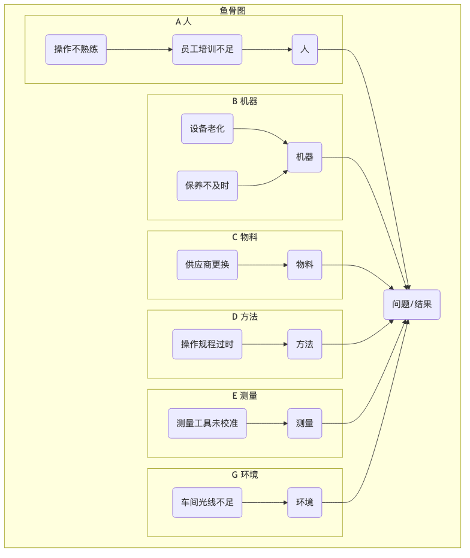

鱼骨图 (石川图)¶
当一个复杂的问题发生时，其背后的原因往往不是单一的，而是由多个不同领域的、相互关联的因素共同导致的。如果我们只凭直觉去思考，很容易遗漏掉一些关键的潜在原因。鱼骨图（Fishbone Diagram），也因其发明者石川馨（Kaoru Ishikawa）博士而被称为石川图（Ishikawa Diagram），是一种强大的、可视化的根本原因分析（Root Cause 分析）工具。它的核心目标在于，通过一个形似鱼骨的结构化框架，来帮助团队系统性地、全面地发散和组织导致一个特定问题（结果）的所有潜在原因。
鱼骨图的魅力在于其结构化的头脑风暴过程。它提供了一系列经典的原因类别（即鱼的“大骨”），引导团队从不同的、预设的角度去思考，从而避免了思维的盲点。通过将所有可能的“人、机、料、法、环”等因素都呈现在一张图上，团队可以对问题的复杂性有一个全局的、整体的认识，并在此基础上，进一步识别出那些最值得深入调查和验证的关键原因。它是一个将团队的零散想法，组织成一幅有逻辑、有条理的“问题全景图”的绝佳工具。
鱼骨图的结构¶
一张鱼骨图，由几个形象的、固定的部分构成：
- 鱼头（Head）：位于图的最右侧，通常用一个方框框起来，里面写着我们要分析的问题或结果（Effect）。例如，“本月产品缺陷率上升20%”。
- 鱼脊（Spine）：一条从鱼头向左延伸的、水平的主干线。
- 大骨（Main Bones）：从鱼脊上斜向延伸出的几条主要分支，代表了产生问题的几大原因类别（Categories）。这些类别为思考提供了结构。
- 中骨/小骨（Sub-Branches）：从大骨上延伸出的、更细小的分支，代表了在每个主要类别下，团队成员通过头脑风暴想到的、更具体的潜在原因。
经典的原因分类模型（大骨）¶
根据分析对象所处的行业不同，鱼骨图的大骨分类可以灵活选用不同的经典模型：
-
制造业常用的“6M”模型：
- Manpower (人): 操作人员的技能、经验、责任心、疲劳度等。
- Machine (机器): 生产设备的老化、精度、维护保养状况等。
- Material (物料): 原材料的质量、规格、供应商稳定性等。
- 方法 (方法): 工作流程、操作规程、工艺参数设置等。
- Measurement (测量): 测量工具的精度、检验标准、数据记录的准确性等。
- Milieu/Mother Nature (环境): 工作场所的温度、湿度、光照、组织文化等。
-
服务业常用的“4S”或“8P”模型：
- 4S: Suppliers (供应商), Systems (系统/流程), Surroundings (环境), Skills (技能)。
- 8P: Product (产品/服务), Price (价格), Place (渠道), Promotion (促销), People (人员), 流程 (过程), Physical Evidence (物理环境), Productivity & Quality (生产力与质量)。

如何绘制和使用鱼骨图¶
-
第一步：明确定义“鱼头”（问题）
与团队一起，就所要分析的问题，达成一个清晰、具体、无歧义的共识。将这个问题陈述写在白板右侧的“鱼头”位置。
-
第二步：画出“鱼脊”和“大骨”（原因类别）
画出主干线，并根据你的行业和问题特点，选择一个合适的分类模型（如6M），画出几条主要的大骨，并标上类别名称。
-
第三步：进行头脑风暴，填充“中/小骨”（具体原因）
- 这是鱼骨图的核心环节。主持人引导团队，围绕每一个大骨类别，进行头脑风暴，提出所有可能的具体原因。
- 关键技巧：在每个具体原因下，可以结合5 Whys（五问法），进行连续的追问，从而找到更深层次的原因。例如，在“人”的大骨下，一个原因是“员工操作失误”，可以继续追问“为什么会失误？”，得到“因为培训不足”这个更深层的原因，并将其作为小骨画上去。
- 将所有想到的原因，都以中骨或小骨的形式，连接到相应的大骨上。
-
第四步：分析鱼骨图，识别关键原因
当鱼骨图被填满后，它就提供了一幅关于问题成因的全景图。此时，团队需要一起审阅整个图表，并通过讨论、投票或简单的数据验证，来识别出那些最有可能导致问题的、或者影响最大的“关键少数”原因。可以用不同颜色的笔，将这些关键原因圈出来。
-
第五步：制定后续的验证和改进计划
鱼骨图本身是一个发散和分析工具，它不能直接解决问题。下一步，团队需要针对圈出的那几个关键原因，制定具体的验证计划（例如，去现场收集数据，验证某个假设是否成立），并在此基础上，制定出最终的改进措施。
应用案例¶
案例一：分析“软件App闪退率高”的问题
- 鱼头：App在最新版本上线后，用户闪退率上升了50%。
- 大骨：可以采用软件开发的变种模型，如：Code (代码), Build (构建), Test (测试), Environment (环境), People (人员)。
- 分析：通过团队的头脑风暴，可能在“代码”大骨下，发现了“新的第三方库存在内存泄漏”；在“测试”大骨下，发现了“自动化测试用例没有覆盖到低端安卓机型”。经过进一步的数据验证，团队最终定位，“内存泄漏”是导致闪退的最主要原因。
案例二：分析“一场市场营销活动效果不佳”
- 鱼头：本次“双十一”促销活动，销售额未达到预期目标。
- 大骨：可以采用市场营销的4P模型：Product (产品), Price (价格), Place (渠道), Promotion (促销)。
- 分析：团队可能发现，在“价格”大骨下，有“优惠券规则过于复杂，用户看不懂”；在“渠道”大骨下，有“社交媒体的广告投放，没有精准地触达目标人群”。通过这个分析，团队可以为下一次的活动，提供清晰的、可供规避的“避坑指南”。
案例三：分析“病人术后感染率上升”
- 鱼头：本季度骨科病房的术后感染率，比上一季度上升了5%。
- 大骨：采用医疗领域的6M模型。
- 分析：一个由医生、护士、院感科专家组成的跨职能团队，共同绘制鱼骨图。他们可能最终发现，在“方法”大骨下的“术前皮肤消毒流程执行不到位”，和“环境”大骨下的“病房通风系统滤网更换不及时”，是两个最可疑的关键原因。接下来，他们将对这两个点，进行重点的数据收集和现场观察。
鱼骨图的优势与挑战¶
核心优势
- 结构化与全面性：提供了一个清晰的结构，引导团队从多个维度进行系统性思考，有效避免遗漏。
- 促进团队参与和共识：是一个极佳的团队协作工具，能够汇集所有人的智慧，并就问题的复杂性达成共识。
- 可视化：将复杂的原因关系，以一种非常直观、一目了然的方式呈现出来。
潜在挑战
- 可能变得过于复杂：对于一个极其复杂的问题，鱼骨图可能会变得非常庞大、杂乱，反而失去了清晰的焦点。
- 无法体现原因的权重：鱼骨图本身，并不能显示出哪个原因的影响更大。它需要与帕累托分析等其他工具结合，才能确定优先级。
- 只是一个“假设”的集合：鱼骨图上所有的“原因”，在经过数据验证之前，都还只是“潜在的、可疑的”原因，而非事实。
延伸与关联¶
- 5 Whys（五问法）：是鱼骨图的黄金搭档。在用鱼骨图进行横向的、广度的原因发散时，可以随时用五问法，对某一个具体的原因，进行纵向的、深度的根本原因挖掘。
- 头脑风暴：鱼骨图为头脑风暴提供了一个结构化的框架，使得创意生成更有序、更聚焦。
- 帕累托分析：在用鱼骨图识别出所有潜在原因后，可以通过收集数据，并用帕累托分析，来确定哪些是导致了80%问题的“关键少数”原因。
来源参考：石川馨（Kaoru Ishikawa）博士是日本战后质量管理运动的先驱之一。鱼骨图作为其发明的“质量管理七大工具”之一，被广泛应用于全球的质量管理和持续改进活动中，是全面质量管理（TQM）和六西格玛（Six Sigma）实践中不可或缺的基础工具。